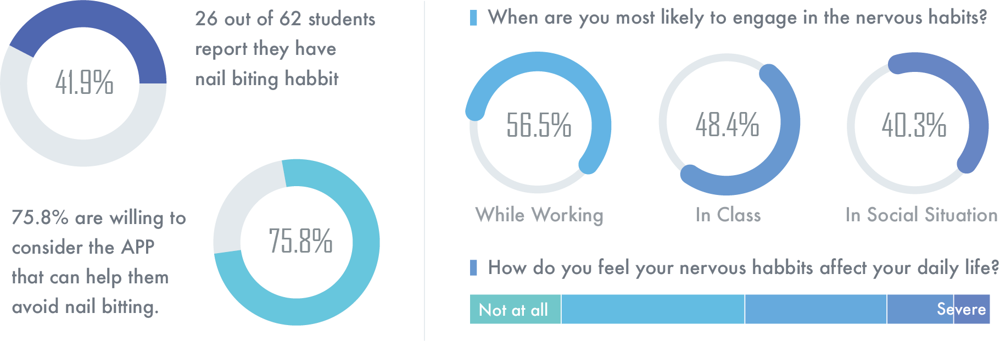

Jonathan Camargo | Lyric Liu
Christina Kelley | Mrunmayi Samant
Fish! is an Android Phone Game for Nervous Habbits Treatment.
Our project aims to identify the most common nervous habits that college students suffer from and propose a solution to help them prevent and avoid these habits.
During the research phase, I took charge in creating the survey and doing ethnographic study. After that, I drew the storyboard of the scenario. I participated throughout the research reflection and helped come up with three possible ideas.Furthermore, I created one low-fidelity prototype and did the user test with my group members. At last, I made illustrations and animations to finalize our the high-fidelity game prototype based on our user feedback.
A nervous habit is any repetitive movement or vocalization that a person may perform unconsciously when he or she is nervous or stressed. Nervous habits are repetitive behaviors or unwanted habit actions that can produce self-harming. These conditions trigger during stressful situations and most of the time are unconscious, making the person unable to control their execution. Nervous habits are highly correlated with anxiety, stress, and obsessive-compulsive disorder . One of the more prevalent traits is nail tic disorders; according to Singal, “they are examples of body-focused repetitive behaviors in which there is an irresistible urge or impulse to perform a certain behavior. The behavior is reinforced as it results in some degree of relief and pleasure ”. In extreme cases, nervous habits can qualify as a disorder , but even in non-clinical cases these habits can be problematic for one’s health, career, and day-to-day interactions.
Nervous habits are very common, especially in adolescent and young adult populations. In a 1990 study of “purposeless habits” in college students, 63% of respondents reported biting their nails and not a single respondent reported having no such habit .
We focus on students due to the prevalence of nervous habits in this population, and also to the frequent job-searching and interviewing that occurs. Nervous habits can be especially problematic in the workplace and in face-to-face job interviews ; people are often unaware of their own habits (making them hard to avoid or prevent), but interviewers may see them as signs of distraction or insecurity.
To learn more about our users, we created and disseminated a survey on nervous habits with a combination of closed-format and open-format questions. Our goal was to identify the most common nervous habits, when they are most likely to occur, how students feel about them, and suggestions for prevention and avoidance. The survey allows to determine the perception of nervous habits in the user group to further select one in particular to be the focus or the project.
Based on our survey result. We narrowed our nervous behavior to be nail bitting which is an annoying habbit that bothers students.
We conducted four ethnographic observations with our target users. Observations were done to assess details in the nail biting process and to understand the work environment and the conditions around the user. During the observation, I kept track of the following things with specific time stamps: 1. The nail biting situation; 2. Nail biter’s awareness 3. Detailed behavior of nail biting; 4. Nail biter’s emotion. My notes include “His nail biting attempt was prevented when his companion talked to him suddenly”, “Most of the time he ended biting his nails for something else catches his attention”, etc.